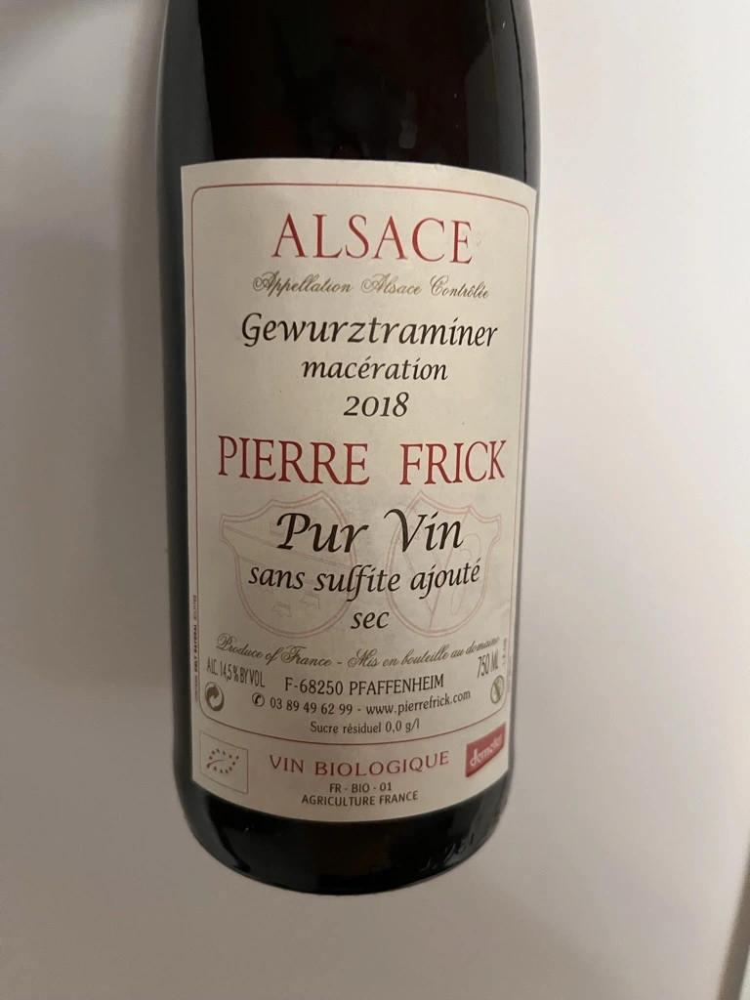
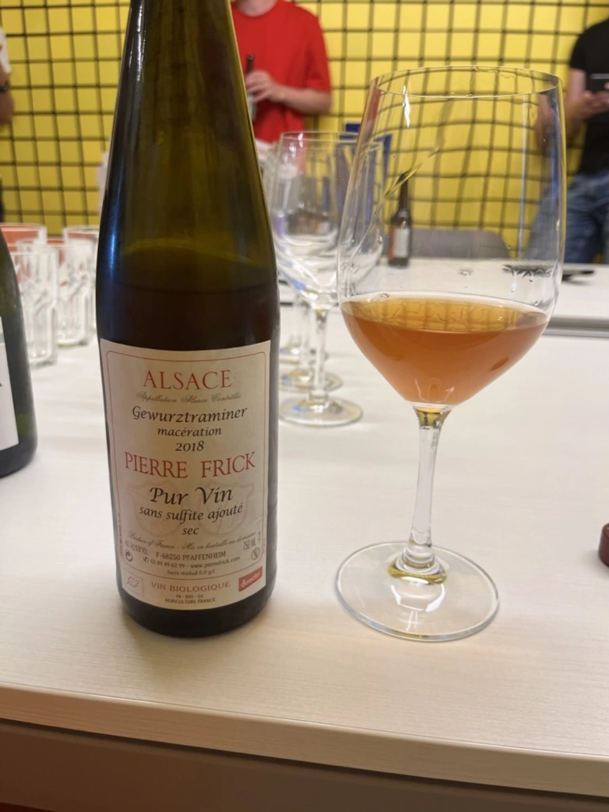

- Type
- White Still, Dry
- Producer
- Pierre Frick
- Vintage
- 2018
- Location
- France, Alsace AOC
- Grapes
- Gewürztraminer
- Alcohol
- 14.5
- Sugar
- NA
- Price
- 800 UAH
- Cellar
- N/A
Ratings
2022-07-22 - 7.50
The combination of funkiness and tropical character on such high levels is not my thing. It is great for parties when you need something bright in the background, not to distract you from conversations, but still perceptible without a single effort. So the award of the rotten tropical bomb goes to this macerated Gewürztraminer. Ten-days old mango, spoiling pineapple, passion fruit that has lost all its passion, orange peel with a host of fluffy mildew, ginger and (god bless) honey! I know it sounds awful, but this wine is good and aligned in style with other wines by Pierre Frick. Intense and rich. Good acidity with some nice bitterness in the aftertaste. Yup, it is vulgar, but hey, you need an alternative for overoaked bold wines for a modern audience.
